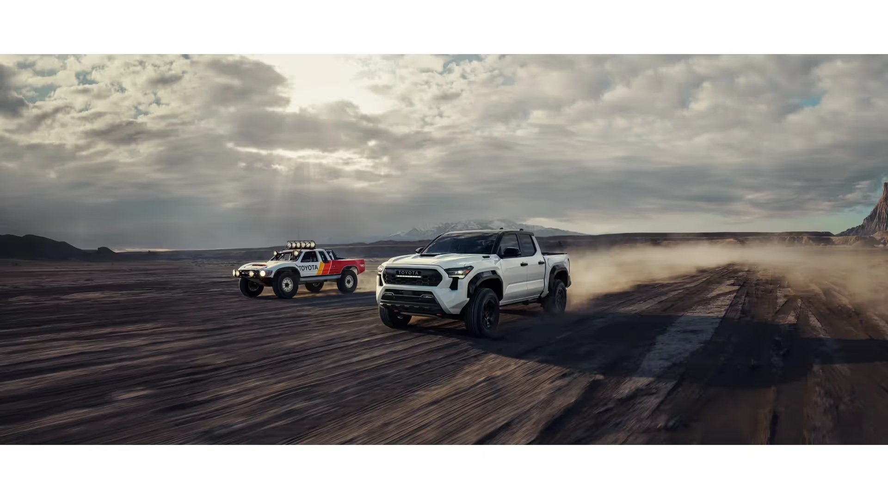
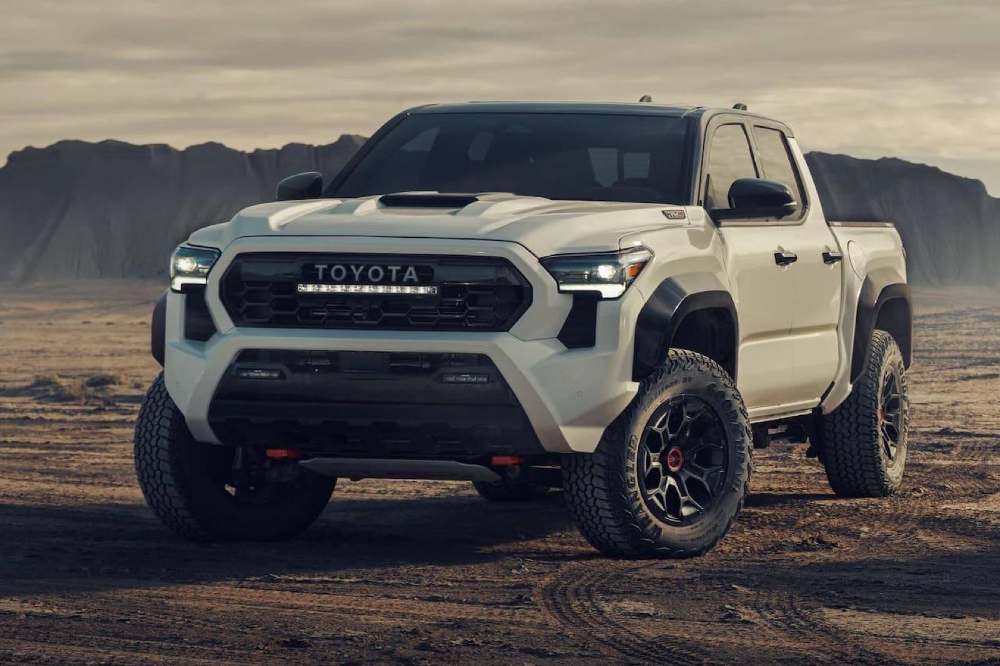
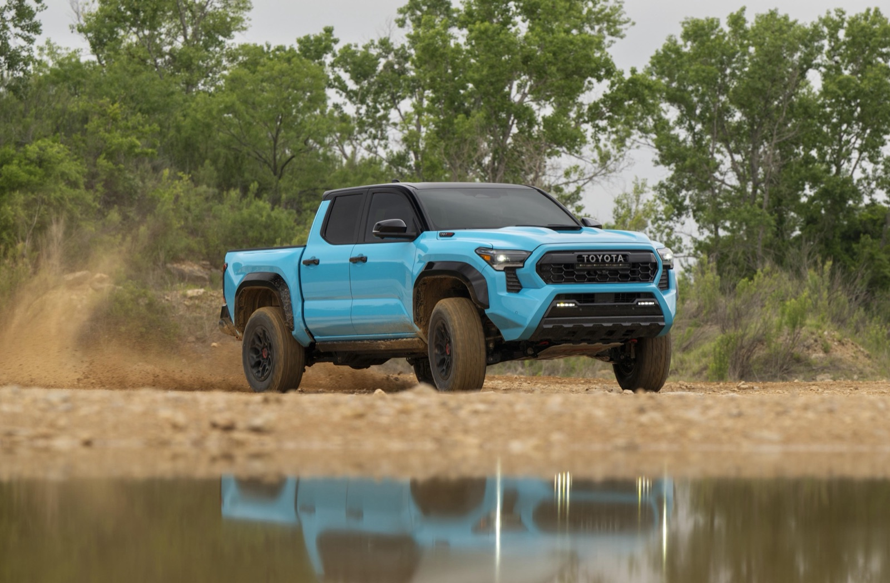

TacomaMid-size · most traded
The mid-size pickup
Easier to park, lighter on fuel than a full-size, and the most common used Toyota truck we take in on trade. Popular with daily drivers, weekend campers, and tradespeople.
If you are looking for used Toyota pickups for sale “near me” in San Diego, CA, Dalton Toyota at 2400 National City Blvd is here for you! We stock quality pre-owned and Certified Used Toyota trucks, from the mid-size Tacoma to the full-size Tundra. We inspect every used pickup before it lists, and our sales team can match you to the right cab and bed in one visit.

A used Toyota truck is one of the most-searched things on the National City lot, and it is easy to see why. Toyota pickups hold their value, and a 2 or 3-year-old truck can give you most of a new truck's capability for less money.
We have sold and serviced Toyota trucks here since the dealership was founded in 1996. Reviewed and posted by Hector Baldivia, Used Car Manager, Dalton Toyota National City.
Dalton Toyota National City holds a 4.6 ★ Google rating across 6,263 reviews. We are a Chamber of Commerce Mile of Cars Dealership of the Year. That is a long track record of National City truck buyers who came back.
Toyota pickups hold their value, and a 2 or 3-year-old truck can give you most of a new truck's capability for less money.

Note · As of this writing, used inventory turns over regularly and current offers change often, so confirm specifics with our team before you visit. Get in touch with us for today's used and Certified Used truck availability.
Toyota sells two pickup lines in the U.S., and almost every used Toyota truck on our lot is one of them.
Easier to park, lighter on fuel than a full-size, and the most common used Toyota truck we take in on trade. Popular with daily drivers, weekend campers, and tradespeople.
More towing and payload, a roomier cab, and the choice when you tow a boat, trailer, or heavy load. Recent Tundra years moved to a twin-turbo V6 and a hybrid option.
For current engine, towing, and fuel-economy numbers, ask us for current Toyota specs or check toyota.com and fueleconomy.gov.
We will not quote a horsepower or MPG figure we cannot confirm on the specific truck you are looking at. The door-jamb sticker and the build sheet settle it.
Choose based on the work the truck does - a Tacoma for daily driving and lighter hauling, a Tundra for heavier towing and payload.
All three paths put a Toyota truck in your driveway. The right one depends on your budget and how much coverage you want in writing.
| Option | New Toyota pickupFactory order | Used Toyota pickupPre-owned | Value pickCertified Used (CPO)Toyota-backed |
|---|---|---|---|
| Best for | Latest tech, full factory warranty, build-to-order | Lowest entry price, widest model-year choice | Used price with manufacturer-backed coverage |
| What to know | Highest price | Sold as-is or with available coverage; ask us | Passes a Toyota inspection and is backed by Toyota warranty terms |
| Where to start | New inventory | Used inventory | Dalton Toyota Contact Portal |
Certified Used Toyota vehicles carry a manufacturer-backed limited warranty and a 12-month/12,000-mile bumper-to-bumper warranty on top of the powertrain coverage, per Toyota's CPO program. Confirm the exact terms on the truck you want with our sales team. Toyota also publishes its CPO program details at toyota.com.
Mid-size used Tacomas move faster than almost anything else we take in. When a clean Tacoma comes in on trade, our team walks the truck, pulls the service history, and verifies the maintenance records before it ever hits the line.

On a recent full-size trade-in, our sales team inspected the bed and frame for rust and towing wear, then measured the remaining tread before pricing it.
Last month, a shopper came in set on a brand-new Tundra for towing a 24-foot travel trailer. After we walked through a 2 to 3-year-old Certified Used Tundra with similar tow capability, the numbers made the used truck the better fit for the budget, and the CPO warranty gave extra peace of mind. We confirmed the towing rating against the door-jamb sticker and the build sheet before anyone signed anything.
You might assume a used full-size Tundra is always the smarter "more truck for the money" play. But if you mostly haul gear and tow under 6,000 pounds, a well-kept used Tacoma often costs less to fuel and insure while doing the same daily work.
We would rather sell you the right truck than the biggest one.
A few minutes of homework protects your money. Use these steps on any used truck, here or anywhere.
Open recalls are free to fix at any Toyota dealer.
Compare the asking price to independent guides before you negotiate.
Consistent oil changes and maintenance records matter more on a truck that may have towed or hauled.
Look for rust, weld repairs, and heavy towing wear. Our team does this on every truck we list.
Some used Toyotas qualify for Certified Used coverage, which changes the value math.
Run the VIN yourself at nhtsa.gov - it takes thirty seconds and it is the single best free check available on any used truck.
Used trucks can be financed like any vehicle, and a shorter term on a lower-priced used pickup can mean a lower total cost than a long loan on a new one. We work with multiple lenders and can run options for many credit situations.
We do not post a fixed rate, payment, or down-payment figure here, because offers change. Start a pre-qualification or ask us for current offers.
Bring your trade. A clean Toyota truck trade-in often carries strong value because demand for used Toyota pickups stays high.
We are at 2400 National City Blvd, National City, CA 91950, on the Mile of Cars, a quick drive down I-5 from anywhere in San Diego County.
If you bought from us and need maintenance, our service department keeps your Toyota truck running - you can schedule service online.
Ready to move? Browse the current used inventory, check new Toyota trucks, get financing, or contact our sales team.
We've been part of National City since 1996, recognized as Chamber of Commerce Mile of Cars Dealership of the Year - a track record built on straightforward numbers, truck by truck. We stock used and Certified Used Toyota Tacoma and Tundra pickups at 2400 National City Blvd.
We inspect every used pickup before it lists - the bed and frame checked for rust, weld repairs, and towing wear, the remaining tread measured before pricing.
We pull the service history and verify the maintenance records before a trade-in ever hits the line.
We will not quote a horsepower or MPG figure we cannot confirm on the specific truck you are looking at.
A used truck is sold based on its condition and may be offered as-is or with available coverage - ask us.
A Certified Used (CPO) Toyota passes a manufacturer inspection and carries Toyota-backed warranty terms, including a 12-month/12,000-mile bumper-to-bumper warranty plus powertrain coverage.
Open recalls are repaired at no charge at any Toyota dealer, and our service department can confirm and complete outstanding recall work.
We stock used and Certified Used Toyota Tacoma and Tundra pickups at our National City lot, with inventory that turns over weekly. The exact trucks, model years, and trims change often.
A used truck is sold based on its condition and may be offered as-is or with available coverage. A Certified Used (CPO) Toyota passes a manufacturer inspection and carries Toyota-backed warranty terms, including a 12-month/12,000-mile bumper-to-bumper warranty plus powertrain coverage.
Ask us which trucks on the lot qualify.
Yes. Dalton Toyota National City is an established Toyota dealership founded in 1996, rated 4.6 ★ from 6,263 Google reviews. We are a Chamber of Commerce Mile of Cars Dealership of the Year and have sold and serviced Toyota trucks in National City for decades.
Prices depend on model year, mileage, trim, and condition, so we do not list a fixed price on this page.
Yes. We work with multiple lenders and can run financing options for many credit situations. Rates and terms change, so we do not post a fixed figure here. Start a pre-qualification or ask us for current offers.
Choose based on the work the truck does. A Tacoma is the mid-size choice for daily driving, lighter hauling, and easier parking, while a Tundra is the full-size choice for heavier towing and payload.
Yes. Open recalls are repaired at no charge at any Toyota dealer.
Our service department can confirm and complete any outstanding recall work on a truck you are considering.
Find the right used or Certified Used Tacoma or Tundra for your budget and the work the truck does. Browse the inventory and start your deal today at toyotadalton.com, and drive home with confidence.